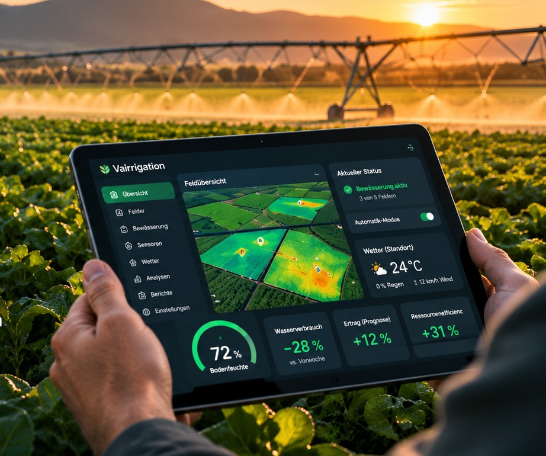
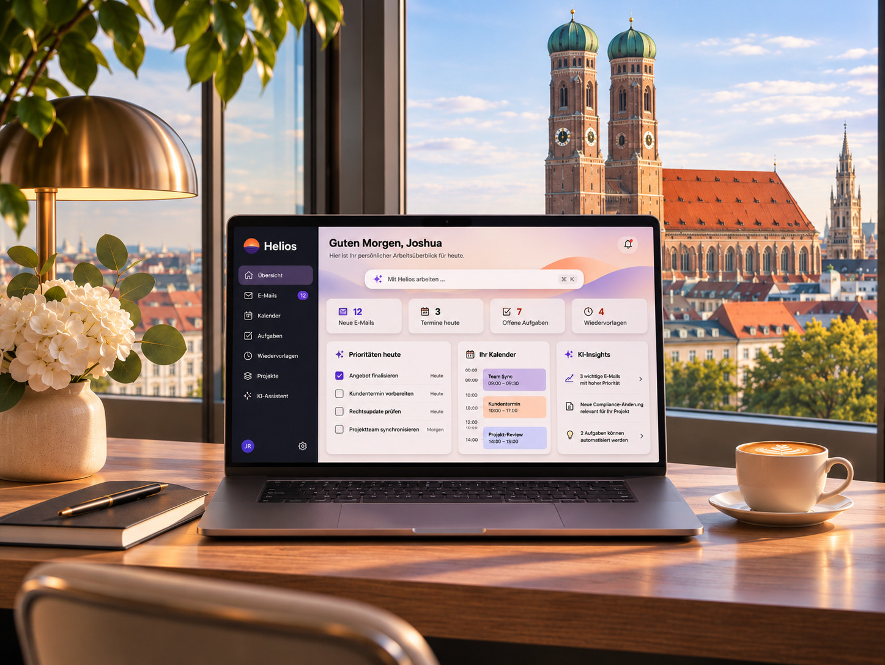

Eigene Technologie
Software, die wir selbst entwickeln.
MADE IN GERMANY
Wir entwickeln intelligente Softwarelösungen für sichere Netzwerke, regulatorische Transparenz, datenbasierte Landwirtschaft und produktivere Arbeitsprozesse.
UNSERE LÖSUNGEN
Vier eigene Softwarelösungen für Netzwerksicherheit, regulatorische Compliance, datenbasierte Landwirtschaft und produktive Arbeitsprozesse.
Cyberangriffe erkennen, bevor sie zum Problem werden.
Produkt ansehenRegulatorische Veränderungen erkennen. Sicherer entscheiden.
Produkt ansehen
More crop per drop. Bewässerung datenbasiert planen.
Produkt ansehen
Weniger Verwaltung. Mehr Zeit für Ihre Kunden.
Produkt ansehenCYBERSECURITY
Sentry analysiert Netzwerkaktivitäten, erkennt verdächtige Muster und unterstützt Unternehmen dabei, Sicherheitsrisiken frühzeitig zu identifizieren und gezielt darauf zu reagieren.
Erkennt verdächtige Aktivitäten und auffällige Muster im Netzwerkverkehr.
Zeigt Risiken, Warnmeldungen und sicherheitsrelevante Entwicklungen zentral und verständlich.
Unterstützt Organisationen beim Überblick über ihre Sicherheitslage – auch ohne großes Security-Team.
COMPLIANCE · LEGAL TECH
Der Compliance Tracker hilft Unternehmen, regulatorische Entwicklungen weltweit zu beobachten, relevante Änderungen mit KI zu analysieren und deren Auswirkungen auf das eigene Geschäft einzuordnen. Mit verständlichen Zusammenfassungen, frühzeitigen Warnmeldungen und konkreten Handlungsempfehlungen.
Relevante regulatorische Entwicklungen strukturiert und nachvollziehbar im Blick behalten.
Neue Anforderungen schneller identifizieren, einordnen und priorisieren.
Verstehen, was sich ändert, wen es betrifft und welche nächsten Schritte sinnvoll sind.
SMART FARMING
Vairrigation verbindet Satellitendaten, Wetterinformationen und KI, um Bewässerungsentscheidungen fundierter zu treffen und Wasser gezielter einzusetzen.
Pflanzenzustand und Flächendaten übersichtlich auswerten.
Wetter- und Standortdaten für fundierte Entscheidungen einbeziehen.
Wasser effizienter einsetzen und landwirtschaftliche Abläufe unterstützen.
ARTIFICIAL INTELLIGENCE · WORKSPACE
Helios verbindet Posteingang, Kalender und Arbeitsvorgänge in einem intelligenten KI-Arbeitsplatz. Die Software erkennt wichtige Informationen, priorisiert Aufgaben und unterstützt Makler dabei, ihren Arbeitsalltag effizienter zu organisieren.
Erkennt, was heute Aufmerksamkeit braucht.
Identifiziert Fristen, Aufgaben und relevante Vorgänge.
Schafft Freiraum für produktivere Kunden- und Facharbeit.
ÜBER G&R GROUP
G&R Group verbindet eigene Softwareentwicklung mit fundierter technologischer Expertise. Wir entwickeln intelligente Lösungen, die Unternehmen schützen, komplexe Prozesse vereinfachen und neue Möglichkeiten eröffnen.
Unser Anspruch: Technologie, die nicht nur innovativ ist, sondern im täglichen Einsatz einen echten Unterschied macht.
Software, die wir selbst entwickeln.
Cybersecurity aus realen Projekten.
Risiken und Veränderungen frühzeitig erkennen.
Weniger Routine. Bessere Entscheidungen.
UNSER ANSPRUCH
Technologieentwicklung mit Fokus auf Qualität, Verlässlichkeit und praktische Anwendbarkeit.
Vier eigenständige Softwarelösungen mit einem gemeinsamen Anspruch an Qualität und Praxisnutzen.
Konkrete Herausforderungen und verständliche Funktionen stehen im Mittelpunkt.
Künstliche Intelligenz dort einsetzen, wo sie Transparenz, Entscheidungen und Effizienz verbessert.
KONTAKT
Ob Sentry, Compliance Tracker, Vairrigation oder Helios – wir sprechen mit Ihnen über passende Lösungen und konkrete nächste Schritte.
office@gr-sec.com